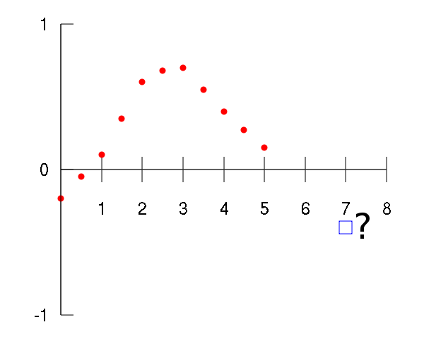
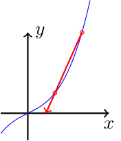
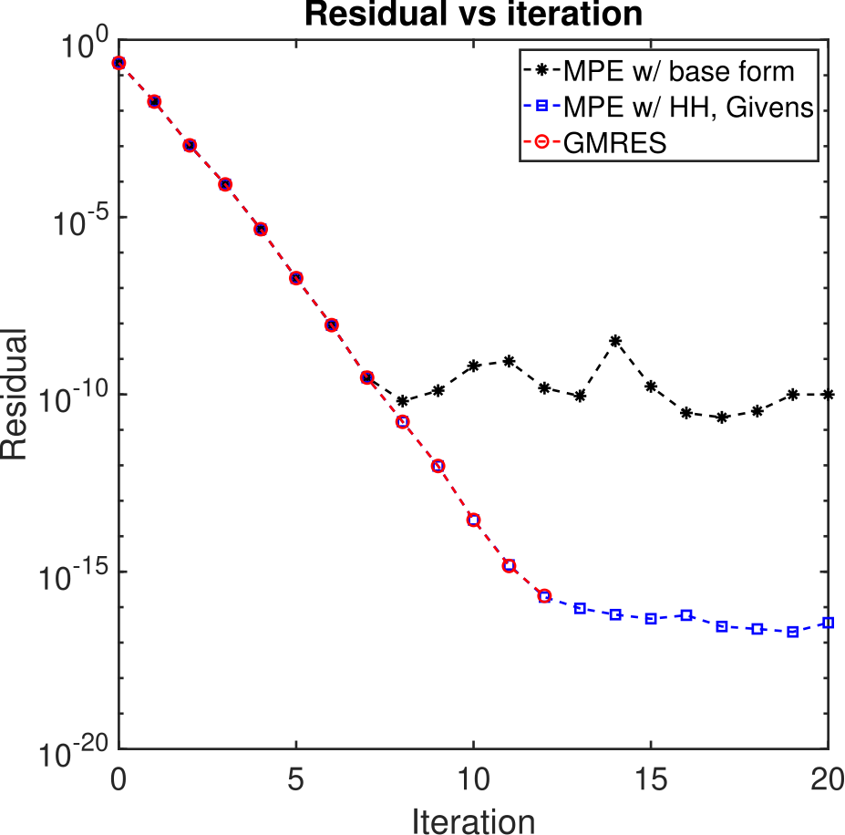

Extrapolation methods as nonlinear Krylov subspace methods
Conor McCoid
Université Laval
Completed under the supervision of Martin J. Gander at the Université de Genève


Extrapolation methods
What are extrapolation methods?
Extrapolation methods seek the limits of nonlinear vector sequences.
\[ \vec{x}_0, \ \vec{x}_{1}, \ \dots, \ \vec{x}_{n} \to \vec{x} \]These sequences can be slow, so we want to accelerate them with extrapolation methods.
We create a new sequence with the same limit: \[ \hat{\vec{x}}_{0,1}, \ \hat{\vec{x}}_{1,1}, \ \dots, \ \hat{\vec{x}}_{n,1} \to \vec{x} \] where $\hat{\vec{x}}_{i,1} \in \text{span} \{ \vec{x}_i, \vec{x}_{i+1} \}$.
In general, we can construct the sequence $\set{ \hat{\vec{x}}_{n,k} }$ where \[ \hat{\vec{x}}_{n,k} \in \text{span} \{ \vec{x}_n, \vec{x}_{n+1}, \dots, \vec{x}_{n+k} \}. \]
$\hat{\vec{x}}_{n,k} =$
$\sum_{i=0}^k u_i \vec{x}_{n+i}$,
where $\sum u_i = 1$.
$\hat{\vec{x}}_{n,k} =$
$\begin{bmatrix} \vec{x}_n & \vec{x}_{n+1} & \dots & \vec{x}_{n+k} \end{bmatrix} \begin{bmatrix} u_0 \\ u_1 \\ \vdots \\ u_k \end{bmatrix}$,
where $\sum u_i = 1$.
$\hat{\vec{x}}_{n,k} =$
$X_{n,k} \vec{u}$,
where $\vec{1}^\top \vec{u} = 1$.
How do we choose $\vec{u}$?
Suppose there is a $\vec{u}$ such that $\hat{\vec{x}}_{n,k} = \vec{x}$, the limit. Then $\vec{x}$ is in the column space of $X_{n,k}$.
Suppose $\vec{x}$ is also in the column space of $X_{n+1,k}$, which happens as $\vec{x}_n$ approaches $\vec{x}$. Then \[ 0 = \vec{x} - \vec{x} = (X_{n+1,k} - X_{n,k}) \vec{u} .\]
Then $\vec{u}$ is the solution of the system \[\begin{bmatrix} 1 & \dots & 1 \\ \vec{x}_{n+1} - \vec{x}_n & \dots & \vec{x}_{n+k+1} - \vec{x}_{n+k} \end{bmatrix} \vec{u} = \begin{bmatrix} 1 \\ \vec{0} \end{bmatrix}.\]
This system is only square if $\vec{x} \in \mathbb{R}^k$. Otherwise, the system is overdetermined.
Instead, we solve the system
\[\begin{bmatrix} 1 & \dots & 1 \\ \vec{v}_1^\top (\vec{x}_{n+1} - \vec{x}_n) & \dots & \vec{v}_1^\top (\vec{x}_{n+k+1} - \vec{x}_{n+k}) \\ \vdots & & \vdots \\ \vec{v}_k^\top (\vec{x}_{n+1} - \vec{x}_n) & \dots & \vec{v}_k^\top (\vec{x}_{n+k+1} - \vec{x}_{n+k}) \end{bmatrix} \vec{u} = \begin{bmatrix} 1 \\ 0 \\ \vdots \\ 0 \end{bmatrix}.\]
for some linearly independent vectors $ \{ \vec{v}_i \}_{i=1}^k$.
Note that $X_{n,k} \vec{u} \bot \vec{v}_i$ as a consequence.
This has the solution (thanks to Cramer's rule)
\[ u_i = \frac{ \begin{vmatrix} \dots & 0 & 1 & 0 & \dots \\ \dots & \vec{v}_1^\top (\vec{x}_{n+i} - \vec{x}_{n+i-1}) & 0 & \vec{v}_1^\top (\vec{x}_{n+i+2} - \vec{x}_{n+i+1}) & \dots \\ & \vdots & \vdots & \vdots & \\ \dots & \vec{v}_k^\top (\vec{x}_{n+i} - \vec{x}_{n+i-1}) & 0 & \vec{v}_k^\top (\vec{x}_{n+i+2} - \vec{x}_{n+i+1}) & \dots \end{vmatrix} }{ \begin{vmatrix} 1 & \dots & 1 \\ \vec{v}_1^\top (\vec{x}_{n+1} - \vec{x}_n) & \dots & \vec{v}_1^\top (\vec{x}_{n+k+1} - \vec{x}_{n+k}) \\ \vdots & & \vdots \\ \vec{v}_k^\top (\vec{x}_{n+1} - \vec{x}_n) & \dots & \vec{v}_k^\top (\vec{x}_{n+k+1} - \vec{x}_{n+k}) \end{vmatrix} } . \]
Then $X_{n,k} \vec{u}$ is equal to
\[ \hat{\vec{x}}_{n,k} = \frac{ \begin{vmatrix} \vec{x}_n & \dots & \vec{x}_{n+k} \\ \vec{v}_1^\top (\vec{x}_{n+1} - \vec{x}_n) & \dots & \vec{v}_1^\top (\vec{x}_{n+k+1} - \vec{x}_{n+k}) \\ \vdots & & \vdots \\ \vec{v}_k^\top (\vec{x}_{n+1} - \vec{x}_n) & \dots & \vec{v}_k^\top (\vec{x}_{n+k+1} - \vec{x}_{n+k}) \end{vmatrix}}{ \begin{vmatrix} 1 & \dots & 1 \\ \vec{v}_1^\top (\vec{x}_{n+1} - \vec{x}_n) & \dots & \vec{v}_1^\top (\vec{x}_{n+k+1} - \vec{x}_{n+k}) \\ \vdots & & \vdots \\ \vec{v}_k^\top (\vec{x}_{n+1} - \vec{x}_n) & \dots & \vec{v}_k^\top (\vec{x}_{n+k+1} - \vec{x}_{n+k}) \end{vmatrix}} . \]
The numerator is a generalized determinant. Each vector in the first row is multiplied by the determinant of the submatrix formed by removing the first row and the vector's column:
\[ \begin{vmatrix} \vec{s}_0 & \dots & \vec{s}_k \\ \vec{t}_0 & \dots & \vec{t}_k \end{vmatrix} = \sum_{i=0}^k (-1)^i \vec{s}_i \begin{vmatrix} \vec{t}_0 & \dots & \vec{t}_{i-1} & \vec{t}_{i-1} & \dots & \vec{t}_k \end{vmatrix} . \]
Aitken's delta-squared process
Suppose $\{ x_n \} \subset \mathbb{R}$ (a sequence of scalars). Then an accelerated sequence is
\[ \begin{align*} \hat{x}_{n,1} = & \frac{ \begin{vmatrix} x_n & x_{n+1} \\ (x_{n+1} - x_n) & (x_{n+2} - x_{n+1}) \end{vmatrix} }{ \begin{vmatrix} 1 & 1 \\ (x_{n+1} - x_n) & (x_{n+2} - x_{n+1}) \end{vmatrix} } \\ = & \frac{ x_n x_{n+2} - x_{n+1}^2 }{(x_{n+2} - x_{n+1}) - (x_{n+1} - x_n)} . \end{align*} \]
Minimal polynomial extrapolation (MPE)
Back to vectors, suppose $\vec{v}_i = \vec{x}_{n+i} - \vec{x}_{n+i-1}$.
\[ \hat{\vec{x}}_{n,k} = \frac{ \begin{vmatrix} \vec{x}_n & \dots & \vec{x}_{n+k} \\ (\vec{x}_{n+1} - \vec{x}_n)^\top (\vec{x}_{n+1} - \vec{x}_n) & \dots & (\vec{x}_{n+1} - \vec{x}_n)^\top (\vec{x}_{n+k+1} - \vec{x}_{n+k}) \\ \vdots & & \vdots \\ (\vec{x}_{n+k} - \vec{x}_{n+k-1})^\top (\vec{x}_{n+1} - \vec{x}_n) & \dots & (\vec{x}_{n+k} - \vec{x}_{n+k-1})^\top (\vec{x}_{n+k+1} - \vec{x}_{n+k}) \end{vmatrix}}{ \begin{vmatrix} 1 & \dots & 1 \\ (\vec{x}_{n+1} - \vec{x}_n)^\top (\vec{x}_{n+1} - \vec{x}_n) & \dots & (\vec{x}_{n+1} - \vec{x}_n)^\top (\vec{x}_{n+k+1} - \vec{x}_{n+k}) \\ \vdots & & \vdots \\ (\vec{x}_{n+k} - \vec{x}_{n+k-1})^\top (\vec{x}_{n+1} - \vec{x}_n) & \dots & (\vec{x}_{n+k} - \vec{x}_{n+k-1})^\top (\vec{x}_{n+k+1} - \vec{x}_{n+k}) \end{vmatrix}} . \]
\[ \hat{\vec{x}}_{n,k} = \frac{ \begin{vmatrix} \vec{x}_n & \dots & \vec{x}_{n+k} \\ (\vec{x}_{n+1} - \vec{x}_n)^\top (\vec{x}_{n+1} - \vec{x}_n) & \dots & (\vec{x}_{n+1} - \vec{x}_n)^\top (\vec{x}_{n+k+1} - \vec{x}_{n+k}) \\ \vdots & & \vdots \\ (\vec{x}_{n+k} - \vec{x}_{n+k-1})^\top (\vec{x}_{n+1} - \vec{x}_n) & \dots & (\vec{x}_{n+k} - \vec{x}_{n+k-1})^\top (\vec{x}_{n+k+1} - \vec{x}_{n+k}) \end{vmatrix}}{ \begin{vmatrix} 1 & \dots & 1 \\ (\vec{x}_{n+1} - \vec{x}_n)^\top (\vec{x}_{n+1} - \vec{x}_n) & \dots & (\vec{x}_{n+1} - \vec{x}_n)^\top (\vec{x}_{n+k+1} - \vec{x}_{n+k}) \\ \vdots & & \vdots \\ (\vec{x}_{n+k} - \vec{x}_{n+k-1})^\top (\vec{x}_{n+1} - \vec{x}_n) & \dots & (\vec{x}_{n+k} - \vec{x}_{n+k-1})^\top (\vec{x}_{n+k+1} - \vec{x}_{n+k}) \end{vmatrix}} . \]
This is essentially the solution to the normal equations, meaning the new sequence is a series of least-squares solutions who are orthogonal to each other.
Topological epsilon-algorithm (TEA)
Recall that we found $\vec{u}$ by assuming \[(X_{n+1,k} - X_{n,k}) \vec{u} = 0.\]
Suppose $(X_{n+i+1,k} - X_{n+i,k}) \vec{u}=0$ for many $i$.
Suppose $(X_{n+i+1,k} - X_{n+i,k}) \vec{u}=0$ for many $i$.
Then $\vec{u}$ solves
\[ \begin{bmatrix} 1 & \dots & 1 \\ \vec{v}^\top (\vec{x}_{n+1} - \vec{x}_n) & \dots & \vec{v}^\top (\vec{x}_{n+k+1} - \vec{x}_{n+k}) \\ \vdots & & \vdots \\ \vec{v}^\top (\vec{x}_{n+k} - \vec{x}_{n+k-1}) & \dots & \vec{v}^\top (\vec{x}_{n+2k} - \vec{x}_{n+2k-1}) \end{bmatrix} \vec{u} = \begin{bmatrix} 1 \\ 0 \\ \vdots \\ 0 \end{bmatrix}, \]
for some $\vec{v}$.
Krylov subspace methods
Krylov subspace methods solve linear systems \[A \vec{x} = \vec{b}, \ A \in \mathbb{R}^{d \times d}, \] by searching for solutions in Krylov subspaces,
\[ \hat{\vec{x}}_k \in \text{span} \{ \vec{b}, A \vec{b}, \dots, A^{k-1} \vec{b} \} = \mathcal{K}_k(A,\vec{b}). \]
\[ \hat{\vec{x}}_k \in \text{span} \{ \vec{b}, A \vec{b}, \dots, A^{k-1} \vec{b} \} = \mathcal{K}_k(A,\vec{b}). \]
Suppose $A^k \vec{b} \in \mathcal{K}_k(A,\vec{b})$, so that $\mathcal{K}_{k+1}(A,\vec{b}) = \mathcal{K}_k(A,\vec{b})$. Then
\[ u_k A^k \vec{b} = u_0 \vec{b} + u_1 A \vec{b} + \dots + u_{k-1} A^{k-1} \vec{b} \]
\[ u_k A^k \vec{b} = u_0 \vec{b} + u_1 A \vec{b} + \dots + u_{k-1} A^{k-1} \vec{b} \]
\[ A^{-1} \vec{b} = \frac{u_k}{u_0} A^{k-1} \vec{b} - \frac{u_1}{u_0} \vec{b} - \dots - \frac{u_{k-1}}{u_0} A^{k-2} \vec{b} \]
\[ A^{-1} \vec{b} = \frac{u_k}{u_0} A^{k-1} \vec{b} - \frac{u_1}{u_0} \vec{b} - \dots - \frac{u_{k-1}}{u_0} A^{k-2} \vec{b} \]
\[ \vec{x} = \frac{u_k}{u_0} A^{k-1} \vec{b} - \frac{u_1}{u_0} \vec{b} - \dots - \frac{u_{k-1}}{u_0} A^{k-2} \vec{b} \]
\[ \vec{x} = \frac{u_k}{u_0} A^{k-1} \vec{b} - \frac{u_1}{u_0} \vec{b} - \dots - \frac{u_{k-1}}{u_0} A^{k-2} \vec{b} \]
\[ \vec{x} \in \mathcal{K}_k(A,\vec{b}) \]
Since $A \in \mathbb{R}^{d \times d}$, it is certainly true that \[A^d \vec{b} \in \mathcal{K}_d(A,\vec{b}).\] There is a finite number of vectors $A^k \vec{b}$ to find.
Over the course of Krylov methods, we create linear vector sequences $\vec{x}_{n+1} = A \vec{x}_n$. From these, we find a new sequence:
\[ \hat{\vec{x}}_k \in \text{span} \{\vec{x}_1, \dots, \vec{x}_k \} = \mathcal{K}_k(A,\vec{x}_1). \]
\[ \hat{\vec{x}}_k \in \text{span} \{\vec{x}_1, \dots, \vec{x}_k \} = \mathcal{K}_k(A,\vec{x}_1). \]
These vectors might be nearly linearly dependent, meaning we could run into numerical error.
We construct the vectors such that $\hat{\vec{x}}_k \bot \hat{\vec{x}}_j$ for all $j \neq k$, for some inner product. Then we normalize wrt the induced norm.
We then want $\hat{\vec{x}}_k$ to be the best solution in $\mathcal{K}_k(A,\vec{x}_1)$ wrt the induced norm.
General minimal residual (GMRES)
Start with the unit vector $\vec{x}_1=\vec{b}/\Vert \vec{b} \Vert$.
Find $\vec{x}_2 := A \vec{x}_1$. Remove the part of $\vec{x}_2$ in the direction of $\vec{x}_1$:
\[h_{1,2} = \langle \vec{x}_2, \vec{x}_1 \rangle, \ \vec{x}_2 = \vec{x}_2 - h_{1,2} \vec{x}_1. \]
Then normalize:
\[h_{2,2} = \Vert \vec{x}_2 \Vert, \ \vec{x}_2 = \vec{x}_2 / h_{2,2} . \]
\[h_{1,2} = \langle \vec{x}_2, \vec{x}_1 \rangle, \ \vec{x}_2 = \vec{x}_2 - h_{1,2} \vec{x}_1. \]
\[h_{2,2} = \Vert \vec{x}_2 \Vert, \ \vec{x}_2 = \vec{x}_2 / h_{2,2} . \]
Then we can write \[A \vec{x}_1 = h_{1,2} \vec{x}_1 + h_{2,2} \vec{x}_2. \]
Then we can write \[A \vec{x}_1 = h_{1,2} \vec{x}_1 + h_{2,2} \vec{x}_2. \]
If we repeat this $k$ times, we'll arrive at
\[A X_{1,k-1} = X_{1,k} H_k \]
where $H_k$ is a Hessenberg matrix and $X_{1,k}$ is orthonormal.
\[A X_{1,k-1} = X_{1,k} H_k \]
We want to minimize $\Vert A \vec{x} - \vec{b} \Vert$ for some $\vec{x}$ in $\mathcal{K}_{k-1}(A,\vec{b})$.
\[ \min \Vert A X_{1,k-1} \vec{u} - \vec{b} \Vert = \]
\[ \min \left \Vert X_{1,k} H_k \vec{u} - X_{1,k} \begin{bmatrix} \Vert \vec{b} \Vert \\ 0 \\ \vdots \\ 0 \end{bmatrix} \right \Vert \]
\[ \min \left \Vert X_{1,k} H_k \vec{u} - X_{1,k} \begin{bmatrix} \Vert \vec{b} \Vert \\ 0 \\ \vdots \\ 0 \end{bmatrix} \right \Vert \]
\[ = \min \Vert H_k \vec{u} - \Vert \vec{b} \Vert \vec{e}_1 \Vert \]
\[ H_k^\top H_k \vec{u} = \Vert \vec{b} \Vert H_k^\top \vec{e}_1\]
GMRES uses the Arnoldi iteration, usually with Householder reflections, to orthogonalize the Krylov subspace.
Then it uses Givens rotations to solve the normal equations of the Hessenberg matrix.
Equivalence between MPE and GMRES
When MPE is applied to a linear sequence, $\vec{x}_{n+1} = (A+I) \vec{x}_n - \vec{b}$, then
\[ \begin{align*} \vec{x}_{n+2} - \vec{x}_{n+1} = & (A+I) \vec{x}_{n+1} - \vec{b} - (A+I) \vec{x}_n + \vec{b} \\ = & (A+I) (\vec{x}_{n+1} - \vec{x}_n), \\ \vec{x}_{n+1} - \vec{x}_n = & (A+I) \vec{x}_{n} - \vec{b} - \vec{x}_n \\ = & A \vec{x}_n - \vec{b}. \end{align*} \]
\[ \begin{align*} \vec{x}_{n+2} - \vec{x}_{n+1} = & (A+I) \vec{x}_{n+1} - \vec{b} - (A+I) \vec{x}_n + \vec{b} \\ = & (A+I) (\vec{x}_{n+1} - \vec{x}_n), \\ \vec{x}_{n+1} - \vec{x}_n = & (A+I) \vec{x}_{n} - \vec{b} - \vec{x}_n \\ = & A \vec{x}_n - \vec{b}. \end{align*} \]
Thus, the norm MPE minimizes is $\Vert A \vec{x} - \vec{b} \Vert$ and $(\vec{x}_{n+k} - \vec{x}_{n+k-1}) \in \mathcal{K}_k(A+I,\vec{x}_{n+1}-\vec{x}_n)$.
Thus, the norm MPE minimizes is $\Vert A \vec{x} - \vec{b} \Vert$ and $(\vec{x}_{n+k} - \vec{x}_{n+k-1}) \in \mathcal{K}_k(A+I,\vec{x}_{n+1}-\vec{x}_n)$.
Since $\hat{\vec{x}}_{n,k} \bot (\vec{x}_{n+i+1} - \vec{x}_{n+i})$ for all $i < k$, the search directions of MPE are identical to those from GMRES.
The residual then decreases identically to GMRES.
Biconjugate gradient (BiCG)
BiCG uses Lanczos biorthogonalization to make
\[ \vec{q}_k^\top \vec{p}_j = 0 \ \forall j < k , \] such that $\vec{q}_k$ and $\vec{p_j}$ are in two different Krylov subspaces.
Equivalence between BiCG and TEA
Apply TEA to the same linear sequence from before, \[\vec{x}_{n+1} = (A+I) \vec{x}_n - \vec{b}.\]
As before,
\[ \vec{x}_{n+2} - \vec{x}_{n+1} = (A+I) (\vec{x}_{n+1} - \vec{x}_n) \]
\[ \vec{x}_{n+2} - \vec{x}_{n+1} = (A+I) (\vec{x}_{n+1} - \vec{x}_n) \]
\[ \vec{v}^\top (\vec{x}_{n+2k} - \vec{x}_{n+2k-1}) = \vec{v}^\top (A+I)^{k-1} (\vec{x}_{n+k+1} - \vec{x}_{n+k}) \]
\[ \begin{bmatrix} 1 & \dots & 1 \\ \vec{v}^\top (\vec{x}_{n+1} - \vec{x}_n) & \dots & \vec{v}^\top (\vec{x}_{n+k+1} - \vec{x}_{n+k}) \\ \vdots & & \vdots \\ \vec{v}^\top (\vec{x}_{n+k} - \vec{x}_{n+k-1}) & \dots & \vec{v}^\top (\vec{x}_{n+2k} - \vec{x}_{n+2k-1}) \end{bmatrix} \vec{u} = \begin{bmatrix} 1 \\ 0 \\ \vdots \\ 0 \end{bmatrix} \]
\[ \vec{x}_{n+2} - \vec{x}_{n+1} = (A+I) (\vec{x}_{n+1} - \vec{x}_n) \]
\[ \vec{v}^\top (\vec{x}_{n+2k} - \vec{x}_{n+2k-1}) = \vec{v}^\top (A+I)^{k-1} (\vec{x}_{n+k+1} - \vec{x}_{n+k}) \]
\[ \begin{bmatrix} 1 & \dots & 1 \\ \vec{v}^\top (\vec{x}_{n+1} - \vec{x}_n) & \dots & \vec{v}^\top (\vec{x}_{n+k+1} - \vec{x}_{n+k}) \\ \vdots & & \vdots \\ \vec{v}^\top (A+I)^k (\vec{x}_{n+1} - \vec{x}_{n}) & \dots & \vec{v}^\top (A+I)^{k-1} (\vec{x}_{n+k+1} - \vec{x}_{n+k}) \end{bmatrix} \vec{u} = \begin{bmatrix} 1 \\ 0 \\ \vdots \\ 0 \end{bmatrix} \]
\[ \begin{bmatrix} 1 & \dots & 1 \\ \vec{v}^\top (\vec{x}_{n+1} - \vec{x}_n) & \dots & \vec{v}^\top (\vec{x}_{n+k+1} - \vec{x}_{n+k}) \\ \vdots & & \vdots \\ \vec{v}^\top (A+I)^k (\vec{x}_{n+1} - \vec{x}_{n}) & \dots & \vec{v}^\top (A+I)^{k-1} (\vec{x}_{n+k+1} - \vec{x}_{n+k}) \end{bmatrix} \vec{u} = \begin{bmatrix} 1 \\ 0 \\ \vdots \\ 0 \end{bmatrix} \]
The residuals are now orthogonal to $\mathcal{K}_k(A+I,\vec{v})$. This is exactly the second Krylov subspace of BiCG.
Multisecant equations
Secant method in 1D
\[ \hat{x} = x_{n+1} - \frac{x_{n+1} - x_n}{f(x_{n+1}) - f(x_n)}f(x_{n+1}), \] which uses $f'(x_n) \approx (f(x_{n+1}) - f(x_n))/(x_{n+1} - x_n)$.
Secant method in nD
\[ \vec{f}(\vec{x}_{n+i}) - \vec{f}(\vec{x}_{n}) \approx J(\vec{x}_n) (\vec{x}_{n+i} - \vec{x}_n ) \]
\[ \begin{bmatrix} \vec{f}(\vec{x}_{n+1}) - \vec{f}(\vec{x}_n) & \dots & \vec{f}(\vec{x}_{n+k}) - \vec{f}(\vec{x}_n) \end{bmatrix} = \hat{J} \begin{bmatrix} \vec{x}_{n+1} - \vec{x}_n & \dots & \vec{x}_{n+k} - \vec{x}_n \end{bmatrix} \]
\[ \hat{\vec{x}} = \vec{x}_n - \hat{J}^{-1} \vec{f}(\vec{x}_n) \]
\[ \begin{bmatrix} \vec{f}(\vec{x}_{n+1}) - \vec{f}(\vec{x}_n) & \dots & \vec{f}(\vec{x}_{n+k}) - \vec{f}(\vec{x}_n) \end{bmatrix} = \hat{J} \begin{bmatrix} \vec{x}_{n+1} - \vec{x}_n & \dots & \vec{x}_{n+k} - \vec{x}_n \end{bmatrix} \]
\[ F_{n,k} \begin{bmatrix} -1 & \dots & -1 \\ 1 \\ & \ddots \\ & & 1 \end{bmatrix} = \hat{J} X_{n,k} \begin{bmatrix} -1 & \dots & -1 \\ 1 \\ & \ddots \\ & & 1 \end{bmatrix} \]
\[ F_{n,k} \begin{bmatrix} -1 & \dots & -1 \\ 1 \\ & \ddots \\ & & 1 \end{bmatrix} = \hat{J} X_{n,k} \begin{bmatrix} -1 & \dots & -1 \\ 1 \\ & \ddots \\ & & 1 \end{bmatrix} \]
\[ F_{n,k} \Delta_n = \hat{J} X_{n,k} \Delta_n \]
\[ \hat{J}^{-1} F_{n,k} \Delta_n = X_{n,k} \Delta_n \]
\[ \hat{\vec{x}}_{n,k} = \vec{x}_n - \hat{J}^{-1} \vec{f}(\vec{x}_n) \]
\[ \hat{J}^{-1} F_{n,k} \Delta_n = X_{n,k} \Delta_n \]
Suppose $\vec{f}(\vec{x}_n) = F_{n,k} \Delta_n \tilde{\vec{u}}$ for some $\tilde{\vec{u}}$, then
\[ F_{n,k} \Delta_n \tilde{\vec{u}} = \vec{f}(\vec{x}_n), \quad \hat{\vec{x}}_{n,k} = \vec{x}_n - X_{n,k} \Delta_n \tilde{\vec{u}} \]
\[ F_{n,k} \Delta_n \tilde{\vec{u}} = \vec{f}(\vec{x}_n), \quad \hat{\vec{x}}_{n,k} = \vec{x}_n - X_{n,k} \Delta_n \tilde{\vec{u}} \]
If the system to find $\hat{J}$ is underdetermined, then the system to find $\tilde{\vec{u}}$ is overdetermined.
\[ B^\top F_{n,k} \Delta_n \tilde{\vec{u}} = B^\top \vec{f}(\vec{x}_n), \quad \hat{\vec{x}}_{n,k} = \vec{x}_n - X_{n,k} \Delta_n \tilde{\vec{u}} \]
\[ B^\top F_{n,k} \Delta_n \tilde{\vec{u}} = B^\top \vec{f}(\vec{x}_n), \quad \hat{\vec{x}}_{n,k} = \vec{x}_n - X_{n,k} \Delta_n \tilde{\vec{u}} \]
$\hat{\vec{u}}:=\Delta_n \tilde{\vec{u}} \implies$
\[ \begin{bmatrix} \vec{1}^\top \\ B^\top F_{n,k} \end{bmatrix} \hat{\vec{u}} = \begin{bmatrix} 0 \\ B^\top \vec{f}(\vec{x}_n) \end{bmatrix}, \quad \hat{\vec{x}}_{n,k} = \vec{x}_n - X_{n,k} \hat{\vec{u}} \]
\[ \begin{bmatrix} \vec{1}^\top \\ B^\top F_{n,k} \end{bmatrix} \hat{\vec{u}} = \begin{bmatrix} 0 \\ B^\top \vec{f}(\vec{x}_n) \end{bmatrix}, \quad \hat{\vec{x}}_{n,k} = \vec{x}_n - X_{n,k} \hat{\vec{u}} \]
\[ \begin{bmatrix} \vec{1}^\top \\ B^\top F_{n,k} \end{bmatrix} (\vec{e}_1 - \hat{\vec{u}}) = \begin{bmatrix} 1 \\ B^\top \vec{f}(\vec{x}_n) \end{bmatrix} - \begin{bmatrix} 0 \\ B^\top \vec{f}(\vec{x}_n) \end{bmatrix}, \quad \hat{\vec{x}}_{n,k} = X_{n,k} (\vec{e}_1 - \hat{\vec{u}}) \]
\[ \begin{bmatrix} \vec{1}^\top \\ B^\top F_{n,k} \end{bmatrix} (\vec{e}_1 - \hat{\vec{u}}) = \begin{bmatrix} 1 \\ B^\top \vec{f}(\vec{x}_n) \end{bmatrix} - \begin{bmatrix} 0 \\ B^\top \vec{f}(\vec{x}_n) \end{bmatrix}, \quad \hat{\vec{x}}_{n,k} = X_{n,k} (\vec{e}_1 - \hat{\vec{u}}) \]
$\vec{u}:=\vec{e}_1 - \hat{\vec{u}} \implies$
\[ \begin{bmatrix} \vec{1}^\top \\ B^\top F_{n,k} \end{bmatrix} \vec{u} = \begin{bmatrix} 1 \\ \vec{0} \end{bmatrix}, \quad \hat{\vec{x}}_{n,k} = X_{n,k} \vec{u} \]
\[ \begin{bmatrix} \vec{1}^\top \\ B^\top F_{n,k} \end{bmatrix} \vec{u} = \begin{bmatrix} 1 \\ \vec{0} \end{bmatrix}, \quad \hat{\vec{x}}_{n,k} = X_{n,k} \vec{u} \]
\[ \hat{\vec{x}}_{n,k} = \frac{ \begin{vmatrix} \vec{x}_n & \dots & \vec{x}_{n+k} \\ \vec{v}_1^\top \vec{f}(\vec{x}_n) & \dots & \vec{v}_1^\top \vec{f}(\vec{x}_{n+k}) \\ \vdots & & \vdots \\ \vec{v}_k^\top \vec{f}(\vec{x}_n) & \dots & \vec{v}_k^\top \vec{f}(\vec{x}_{n+k}) \end{vmatrix}}{ \begin{vmatrix} 1 & \dots & 1 \\ \vec{v}_1^\top \vec{f}(\vec{x}_n) & \dots & \vec{v}_1^\top \vec{f}(\vec{x}_{n+k}) \\ \vdots & & \vdots \\ \vec{v}_k^\top \vec{f}(\vec{x}_n) & \dots & \vec{v}_k^\top \vec{f}(\vec{x}_{n+k}) \end{vmatrix}} \]
General Equivalence
- Choose $\vec{f}(\vec{x}_n) = \vec{x}_{n+1} - \vec{x}_n$ and the multisecant equations are an extrapolation method.
- Choose $\vec{f}(\vec{x}) = A \vec{x} - \vec{b}$ and the iterates lie in a Krylov subspace.
- Choose $\vec{v}_i$ to lie in the same Krylov subspace and the residuals are orthogonal to the previous subspaces.
- Choose $\vec{v}_i$ to be functions of the residuals and the iterates are minimums in some norm.
For GMRES/MPE:
- $F_{n,k} = X_{n+1,k} - X_{n,k}$
- $B = F_{n,k-1}$
For BiCG/TEA:
- $F_{n,k} = X_{n+1,k} - X_{n,k}$
- $\vec{v}_i = (A+I)^{i-1} \vec{v}$
\[\textcolor{red}{\vec{f}(\vec{x}_n) = \vec{x}_{n+1} - \vec{x}_n}\] \[ \textcolor{blue}{\vec{x}_{n+2} - \vec{x}_{n+1} = (A+I) (\vec{x}_{n+1} - \vec{x}_{n}) } \]
Numerical examples
quasi-Newton methods
So far, we've solved the underdetermined system \[ \hat{J} X_{n,k} \Delta = F_{n,k} \Delta \] with added constraints.
Alternatively, we can pad out $X_{n,k}$ with arbitrary vectors.
\[ X_{n,k} \to \begin{bmatrix} X_{n,k} & Q_k \end{bmatrix} \]
\[ X_{n,k} \to \begin{bmatrix} X_{n,k} & Q_k \end{bmatrix} \]
The matrix $F_{n,k}$ needs to be updated as well. $\hat{J}$ now updates with each choice of $Q_k$:
\[ \hat{J}_{k+1} \begin{bmatrix} X_{n,k} & Q_k \end{bmatrix} \Delta = \begin{bmatrix} F_{n,k} \Delta & \hat{J}_k Q_k \Delta \end{bmatrix} \]
generalized Broyden's methods
\[ \hat{J}_{k+1} \begin{bmatrix} X_{n,k} & Q_k \end{bmatrix} \Delta = \begin{bmatrix} F_{n,k} \Delta & \hat{J}_k Q_k \Delta \end{bmatrix} \]
In Broyden's method, $Q_k$ is chosen such that $(Q_k \Delta)^\top X_{n,k} \Delta = 0$.
As another alternative, add relaxation to the multisecant equations:
\[\hat{\vec{x}}_{n,k} = X_{n,k} \vec{u} + \beta F_{n,k} \vec{u} . \]
As we've seen, this is equivalent to:
\[\hat{\vec{x}}_{n,k} = \vec{x}_{n+k} - X_{n,k} \Delta \tilde{\vec{u}} + \beta( \vec{f}(\vec{x}_{n+k}) - F_{n,k} \Delta \tilde{\vec{u}}) . \]
Anderson mixing
\[\hat{\vec{x}}_{n,k} = \vec{x}_{n+k} - X_{n,k} \Delta \tilde{\vec{u}} + \beta( \vec{f}(\vec{x}_{n+k}) - F_{n,k} \Delta \tilde{\vec{u}}) . \]
Conclusions
- Extrapolation methods and Krylov subspace methods use the same underlying multisecant equations, and so they can share techniques.
- We can use extrapolation methods to solve nonlinear sequences in place of Krylov subspace methods.